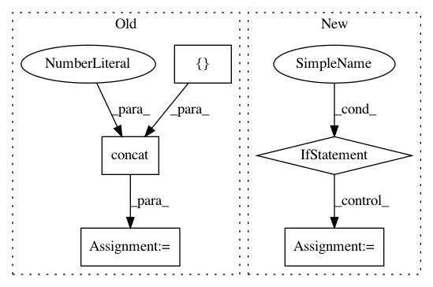

592c161032bfd697ef6f2f334c5cd007062bec4b,rllib/models/tf/recurrent_net.py,LSTMWrapper,forward,#LSTMWrapper#Any#Any#Any#,176
Before Change
// Concat. prev-action/reward if required.
if self.model_config["lstm_use_prev_action_reward"]:
wrapped_out = tf.concat(
[
wrapped_out,
tf.reshape(
tf.cast(input_dict[SampleBatch.PREV_ACTIONS],
tf.float32), [-1, self.action_dim]),
tf.reshape(
tf.cast(input_dict[SampleBatch.PREV_REWARDS],
tf.float32), [-1, 1]),
],
axis=1)
// Then through our LSTM.
input_dict["obs_flat"] = wrapped_out
return super().forward(input_dict, state, seq_lens)
After Change
tf.cast(input_dict[SampleBatch.PREV_REWARDS], tf.float32),
[-1, 1]))
if prev_a_r:
wrapped_out = tf.concat([wrapped_out] + prev_a_r, axis=1)
// Then through our LSTM.
input_dict["obs_flat"] = wrapped_out
return super().forward(input_dict, state, seq_lens)
@override(RecurrentNetwork)
In pattern: SUPERPATTERN
Frequency: 3
Non-data size: 5
Instances
Project Name: ray-project/ray
Commit Name: 592c161032bfd697ef6f2f334c5cd007062bec4b
Time: 2020-11-25
Author: sven@anyscale.io
File Name: rllib/models/tf/recurrent_net.py
Class Name: LSTMWrapper
Method Name: forward
Project Name: asyml/texar
Commit Name: b5c8bdd81be77eac5434a476f62c5bdef56f1838
Time: 2019-07-01
Author: haoranshi97@gmail.com
File Name: texar/modules/embedders/position_embedders.py
Class Name: SinusoidsPositionEmbedder
Method Name: __init__
Project Name: dmlc/gluon-nlp
Commit Name: 5fe8d7b7f5770d82e4f3bfb489a67999d9442ce6
Time: 2020-01-22
Author: 798672141@qq.com
File Name: scripts/bert/finetune_classifier.py
Class Name:
Method Name: evaluate